Adattamento narrativo italiano basato sulla traduzione di John Payne.
Payne era un poeta e traduttore inglese, appassionato di lingue e letterature orientali. Tradusse Le Mille e una Notte direttamente dall’arabo, dedicando attenzione sia alla prosa sia ai versi: la sua versione permette di seguire da vicino il lungo viaggio della Città di Bronzo.
Le illustrazioni interpretano la città in chiave fantasy.
Tavola 01 / 15
Il desiderio del califfo
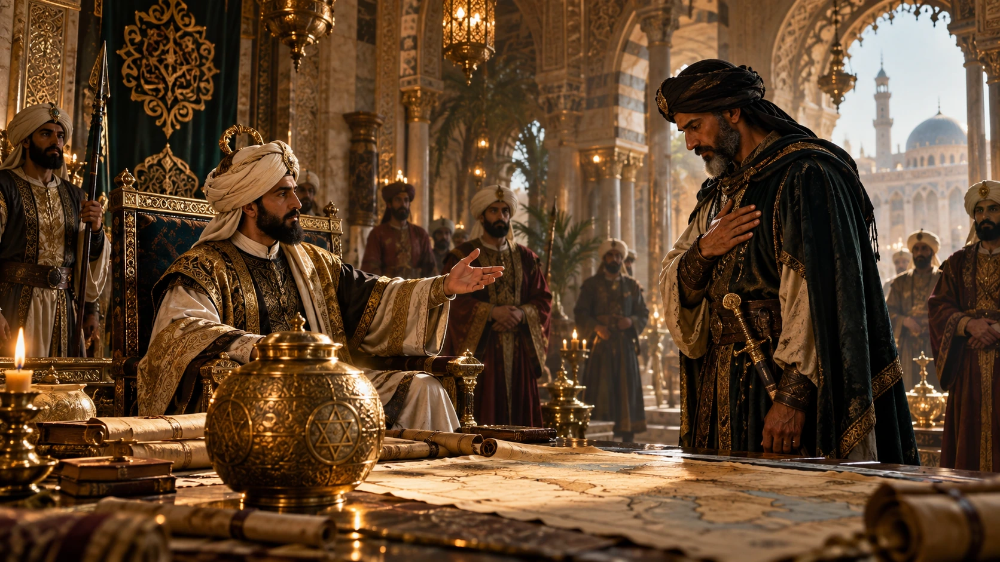
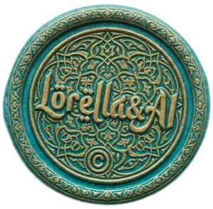
Interpretazione visiva fantasy · immagine AI
A Damasco una conversazione aprì una strada verso un passato che nessuno dei presenti aveva conosciuto. Il califfo ʿAbd al-Malik ibn Marwān ascoltava le storie dei popoli antichi quando fu pronunciato il nome di Sulaymān, Salomone figlio di Davide. Si raccontava che Dio gli avesse concesso autorità sugli uomini, sugli animali e sui jinn. Gli spiriti ribelli erano stati rinchiusi in recipienti di metallo, chiusi con piombo e segnati dal suo sigillo.
Talib ibn Sahl, conoscitore di tesori nascosti, riferì una storia tramandata nella propria famiglia. Una nave diretta in Sicilia era stata sospinta fuori rotta e aveva raggiunto una costa sconosciuta. Là un pescatore aveva aperto un vaso raccolto nelle reti. Ne era uscito uno spirito che implorava il perdono di Salomone, credendolo ancora vivo.
Il califfo volle vedere quei recipienti. Affidò a Talib le lettere destinate all’Egitto e a Musa ibn Nusayr, governatore delle terre occidentali. Fu così che il racconto divenne un incarico e l’incarico un viaggio.
Tavola 02 / 15
La strada delle stelle
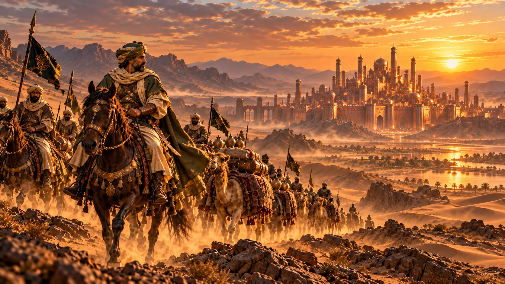
Interpretazione visiva fantasy · immagine AI
Musa raccolse uomini e provviste ma gli occorreva qualcuno capace di guidarli. Gli indicarono lo sceicco ʿAbd al-Samad: un anziano che conosceva mari, deserti e paesi lontani. Talib avrebbe accompagnato la spedizione come inviato del califfo. La conoscenza del cammino apparteneva allo sceicco.
Il viaggio promesso era lunghissimo. Attraversarono terre abitate e rovine, alture e distese senza acqua. Poi una notte le stelle si nascosero. Senza quei punti luminosi la guida smarrì la strada. Anche l’esperienza aveva un limite.
Musa decise di proseguire. Verso mezzogiorno apparve una costruzione scura e imponente. ʿAbd al-Samad riconobbe nelle memorie della propria famiglia il palazzo che precedeva la Città di Bronzo. Il cammino dei vivi stava per incontrare le parole dei morti.
Tavola 03 / 15
Il palazzo dei re scomparsi
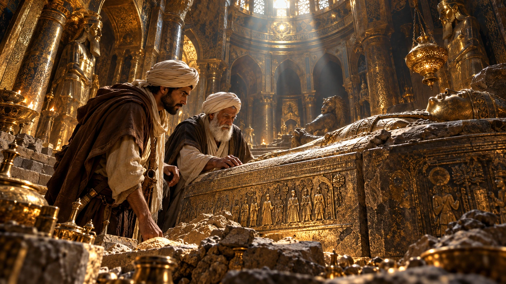
Interpretazione visiva fantasy · immagine AI
L’ingresso era aperto. Le decorazioni mostravano una magnificenza sopravvissuta a coloro che l’avevano desiderata. Nessuno venne ad accogliere i viaggiatori. A parlare furono le iscrizioni: ricordavano sovrani potenti ormai sepolti e ricchezze incapaci di comprare un solo giorno di vita.
In una camera circondata da tombe trovarono il ricordo di un antico dominatore, figlio di Shaddād. Aveva posseduto eserciti e tesori smisurati. Quando la morte era entrata nel suo palazzo aveva chiesto agli uomini di difenderlo e all’oro di riscattarlo. Nessuno dei due aveva potuto farlo.
Musa fece trascrivere quelle parole. Una tavola ricordava quanti re avessero mangiato alla sua superficie prima di scomparire. La portò con sé. Il primo oggetto raccolto custodiva già una lezione: l’uso passa e la traccia rimane.
Tavola 04 / 15
Il cavaliere che indica la via
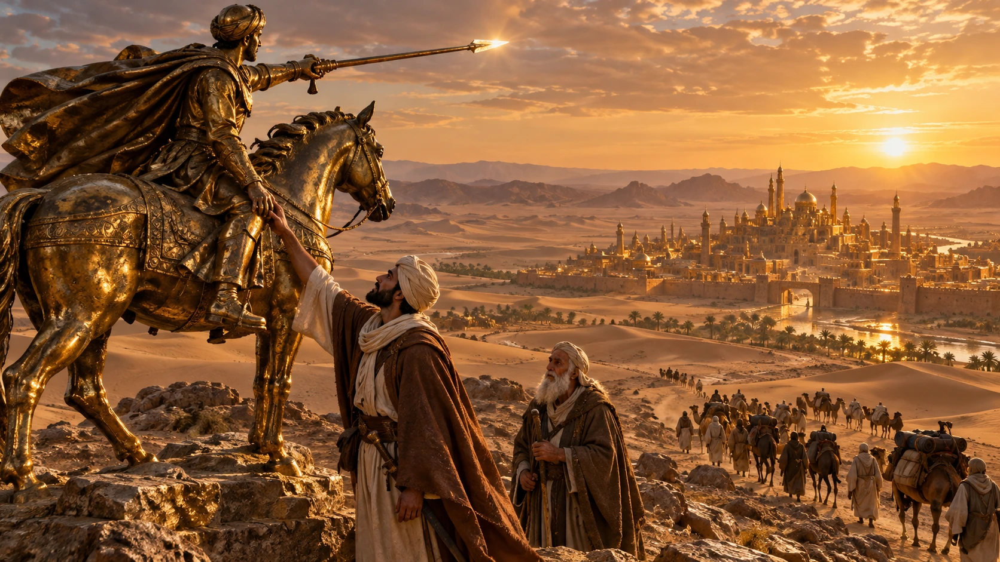
Interpretazione visiva fantasy · immagine AI
Dopo altri giorni raggiunsero un’altura. Vi stava un cavaliere di metallo con una lancia splendente. L’iscrizione spiegava un gesto preciso: strofinare la sua mano e seguire la direzione verso cui si sarebbe voltato.
Musa obbedì. La figura ruotò e si fermò indicando una nuova strada. Gli uomini ripresero il cammino lungo quella direzione.
Nella novella la meraviglia non deve essere spiegata per funzionare. Una statua può diventare una guida e una parola incisa può mettere in movimento il metallo. Il viaggio continua attraverso oggetti che sembrano custodire la volontà di persone ormai assenti.
Tavola 05 / 15
Dahish, prigioniero del passato
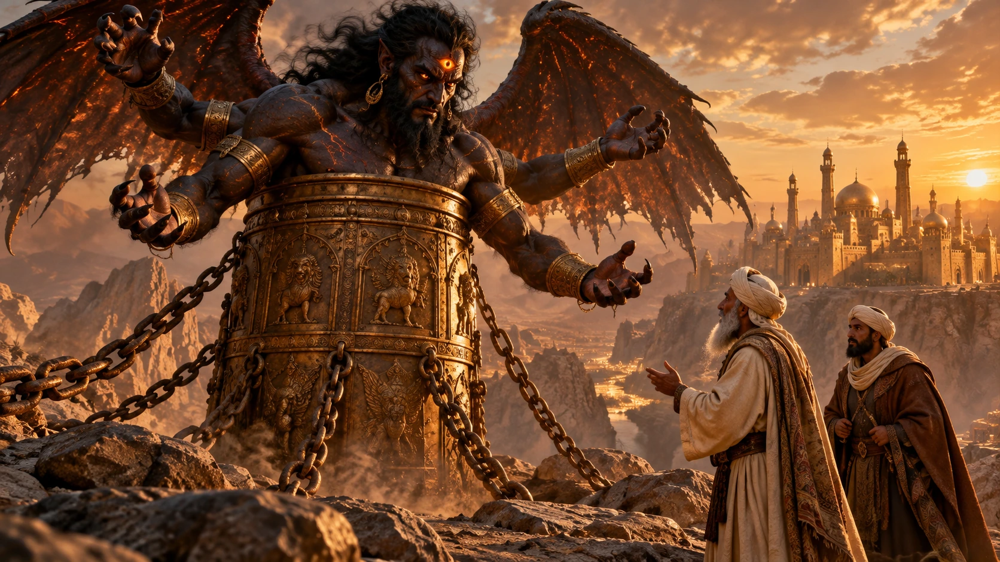
Interpretazione visiva fantasy · immagine AI
Trovarono poi una colonna di metallo. Ne emergeva fino alle ascelle una creatura alata, con quattro braccia e un terzo occhio da cui parevano uscire scintille. La sua voce invocava Dio. Gli uomini arretrarono ma Musa mandò lo sceicco a interrogarla.
Il suo nome era Dahish. Aveva comandato jinn al servizio di un re del mare e parlato dall’interno di un idolo di corniola. Quando Salomone aveva chiesto a quel re di abbandonare l’idolo e riconoscere la sua missione profetica, Dahish aveva incoraggiato la resistenza. Si credeva invincibile.
La guerra aveva spezzato quella certezza. Salomone era arrivato con uomini, jinn, animali e uccelli. Ed-Dimiryāt aveva sconfitto Dahish, inseguito la sua fuga e condotto il prigioniero davanti al profeta. La colonna sigillata era diventata la sua prigione.
Lo sceicco gli domandò dei vasi. Dahish indicò il mare di al-Karkar e la strada verso la città vicina. Una creatura del tempo mitico aveva risposto a uomini di un altro secolo.
Tavola 06 / 15
Due fuochi nel silenzio
Interpretazione visiva fantasy · immagine AI
In lontananza apparve una massa nera fra due bagliori. ʿAbd al-Samad riconobbe la città descritta nel Libro dei Tesori Nascosti: mura di pietra scura e due torri di metallo che da lontano somigliavano a fuochi.
Davanti alla cinta non trovarono accessi visibili. Un uomo cavalcò intorno alle mura per due giorni e due notti senza scoprire una breccia. Le porte esistevano ma il segreto per aprirle era all’interno.
Musa, Talib e lo sceicco salirono su un’altura. Sotto di loro si stendevano palazzi, cupole, corsi d’acqua e giardini. Mancava il suono di una comunità viva. Si udivano soltanto gli uccelli. La bellezza era rimasta e chi l’aveva abitata era scomparso.
Tavola 07 / 15
Le sette tavole bianche
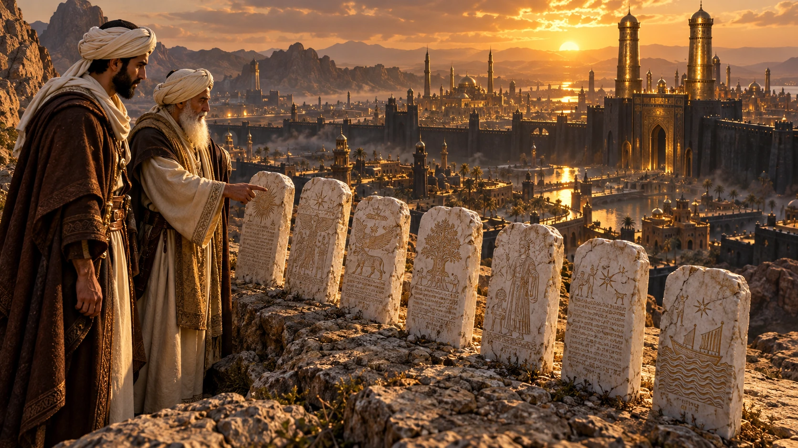
Interpretazione visiva fantasy · immagine AI
Sull’altura Musa scorse sette tavole di marmo bianco. Fece avvicinare lo sceicco perché ne leggesse le iscrizioni. Le parole si rivolgevano al viaggiatore come se lo avessero atteso.
Ricordavano la fragilità della dimora terrena. Domandavano dove fossero i re, gli eserciti e le ricchezze che avevano riempito i paesi. I palazzi non avevano protetto i loro signori e i tesori non avevano arrestato la fine.
Quella lettura cambiava il modo di guardare la città. Prima era una meraviglia da raggiungere. Ora era anche una domanda rivolta a chi desiderava possederla. Musa pianse e fece conservare le parole: ciò che poteva riportare indietro comprendeva anche la memoria.
Tavola 08 / 15
Il richiamo oltre le mura
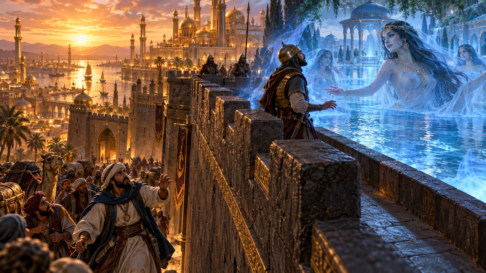
Interpretazione visiva fantasy · immagine AI
Talib propose di costruire una scala. Fabbri e carpentieri lavorarono fino a raggiungere l’altezza delle mura. Un primo uomo salì per cercare il modo di aprire una porta.
Giunto in cima si mise a battere le mani, gridò parole di ammirazione e si gettò dall’altra parte. Non tornò. Altri tentarono credendosi più saldi. Dodici uomini morirono nello stesso modo.
Il pericolo non aveva l’aspetto di una minaccia. Si presentava come qualcosa di irresistibilmente bello. Musa pensò di rinunciare ma ʿAbd al-Samad chiese di salire. Perdere la guida avrebbe significato perdere anche la strada del ritorno. Lo sceicco volle comunque tentare.
Tavola 09 / 15
La guida e le porte nascoste
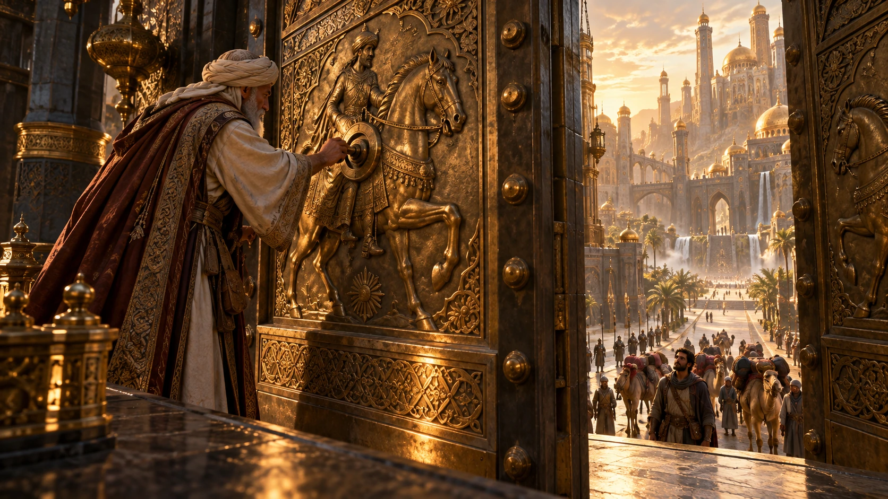
Interpretazione visiva fantasy · immagine AI
ʿAbd al-Samad salì recitando invocazioni e versetti di protezione. Dall’alto vide dieci fanciulle che gli facevano cenno di raggiungerle e gli sembrò che sotto si aprisse un lago. Avvertì lo stesso impulso che aveva trascinato i compagni.
Poi vide i loro corpi. Si trattenne e continuò a pregare finché l’apparizione scomparve. Era un incantesimo posto a difesa della città.
Camminando sulle mura raggiunse le torri e una figura equestre presso una porta. Una nuova iscrizione ordinava di girare dodici volte un perno. Lo fece e il passaggio si aprì. All’interno trovò i guardiani morti e le chiavi sul corpo del più anziano. Tolse serrature e sbarramenti. La grande porta risuonò come un tuono.
Musa entrò con metà degli uomini e lasciò gli altri fuori. Per prima cosa seppellirono i compagni caduti.
Tavola 10 / 15
I mercati senza voci
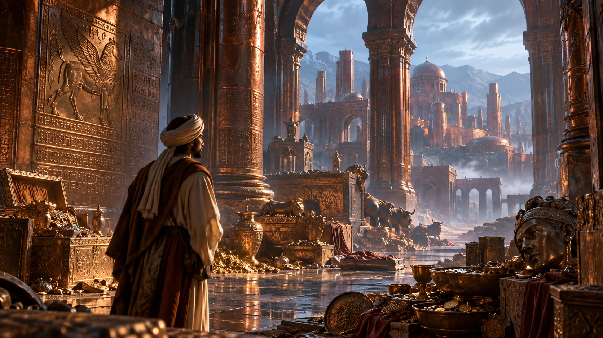
Interpretazione visiva fantasy · immagine AI
Le botteghe erano aperte. Le bilance pendevano ancora al loro posto. Nei mercati si trovavano stoffe intessute d’oro e d’argento, perle, gioielli, profumi e recipienti preziosi. I mercanti erano morti accanto alle merci.
La spedizione attraversò una città che conservava l’ordine delle attività quotidiane senza più possedere chi le svolgeva. Ogni banco sembrava aspettare una mano. Ogni ricchezza aveva perduto il proprio acquirente.
Nel palazzo vicino li accolsero armi, stendardi e letti di seta. Anche lì i corpi sembravano dormire. Attraversarono sale di fontane e tesori fino a un pavimento lucidissimo che pareva acqua. Lo sceicco dovette renderlo attraversabile. Poi una porta aperta grazie alla sua abilità li condusse alla presenza più sconcertante di tutte.
Tavola 11 / 15
Tadmurah, la donna immobile
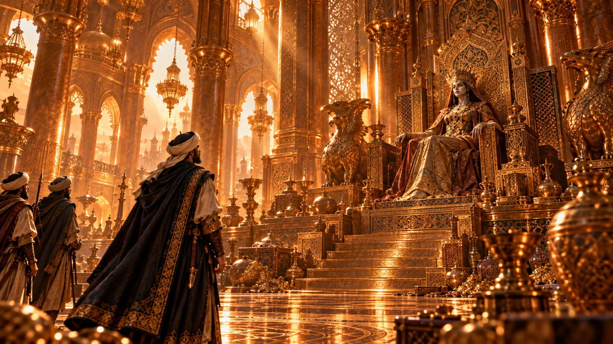
Interpretazione visiva fantasy · immagine AI
Sotto un padiglione prezioso giaceva una donna coronata. Il suo abito, il collo e la fronte splendevano di perle e gemme. I capelli erano scuri e le guance conservavano colore. Sembrava seguire i visitatori con gli occhi.
Musa la salutò. Non ricevette risposta. Lo sceicco spiegò che il corpo era stato imbalsamato con grande arte e che l’effetto degli occhi era ottenuto mediante il mercurio. La novella attribuisce così a un artificio l’apparenza della vita.
Una tavola d’oro rivelava il suo nome: Tadmurah, figlia dei re degli Amaleciti. Aveva governato con giustizia e distribuito doni. Poi erano arrivati sette anni senza pioggia. Esaurite le provviste e mangiati gli animali, aveva inviato uomini con i suoi tesori in cerca di cibo. Erano tornati senza averne trovato: nemmeno le perle potevano essere scambiate con grano.
La città aveva chiuso le porte e atteso la fine. Tadmurah consentiva ai futuri visitatori di prendere i tesori ma proibiva di spogliare il suo corpo. Due figure armate custodivano i gradini della sua dimora.
Tavola 12 / 15
Il limite che Talib oltrepassò
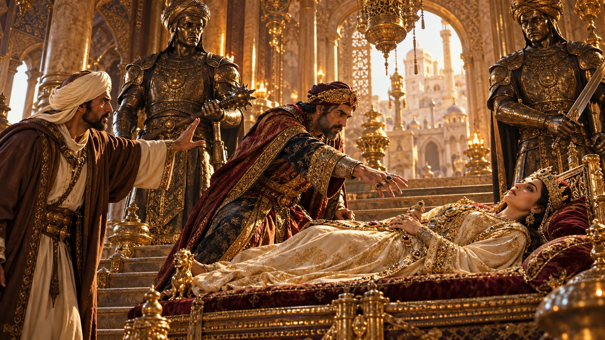
Interpretazione visiva fantasy · immagine AI
Musa ordinò di raccogliere parte delle ricchezze consentite. Talib fissava invece i gioielli della donna. Li giudicava il dono più prezioso da portare al califfo.
L’emiro gli ricordò il divieto. Quelle parole affidavano loro una responsabilità. Talib replicò che una morta non aveva bisogno di ornamenti e che un semplice tessuto sarebbe bastato a coprirla.
Salì i gradini. Le due figure si mossero: una lo colpì alla schiena e l’altra gli tagliò la testa. Musa rimproverò la sua cupidigia. Il tesoro disponibile era già sufficiente. Talib aveva voluto appropriarsi anche di ciò che gli era stato espressamente negato.
Gli uomini caricarono i cammelli e richiusero la porta. La città tornò al proprio silenzio.
Tavola 13 / 15
Il mare di al-Karkar
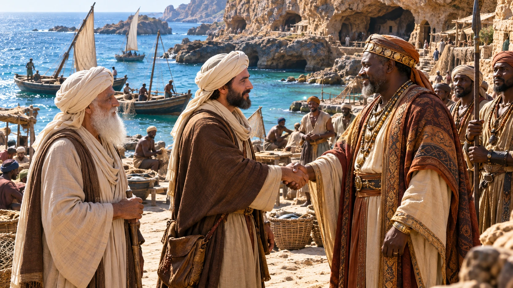
Interpretazione visiva fantasy · immagine AI
La ricerca dei vasi non era ancora compiuta. Lasciata la città, la spedizione seguì la costa fino a una montagna affacciata sul mare. Nelle sue grotte abitava una comunità il cui sovrano venne incontro ai viaggiatori.
Musa e il re si interrogarono a vicenda sulla loro natura. Ciascuno poteva apparire all’altro una creatura straordinaria. Il re spiegò che anche la sua gente apparteneva all’umanità.
Indicò il mare chiamato al-Karkar. Nel racconto della propria fede ricordò al-Khiḍr, che aveva invitato la comunità a riconoscere Dio. Musa espose l’incarico del califfo. Fu accolto con ospitalità e la spedizione poté riposare prima del recupero.
Tavola 14 / 15
Dodici vasi dal fondo del mare
Interpretazione visiva fantasy · immagine AI
Il re ordinò ai sommozzatori di immergersi. Dal mare riportarono dodici recipienti attribuiti a Salomone, chiusi e sigillati. L’obiettivo annunciato a Damasco era finalmente raggiunto.
Musa offrì doni al sovrano e ne ricevette meraviglie marine. Nella versione di Payne compaiono anche esseri descritti come pesci di forma umana: un’ulteriore meraviglia del viaggio, destinata a non sopravvivere al calore del ritorno.
I vasi vennero affidati alla carovana. Il mare aveva custodito gli spiriti mentre altrove regni e città erano scomparsi. Il sigillo collegava due tempi lontanissimi senza annullare la distanza fra loro.
Tavola 15 / 15
Ciò che Musa riportò con sé
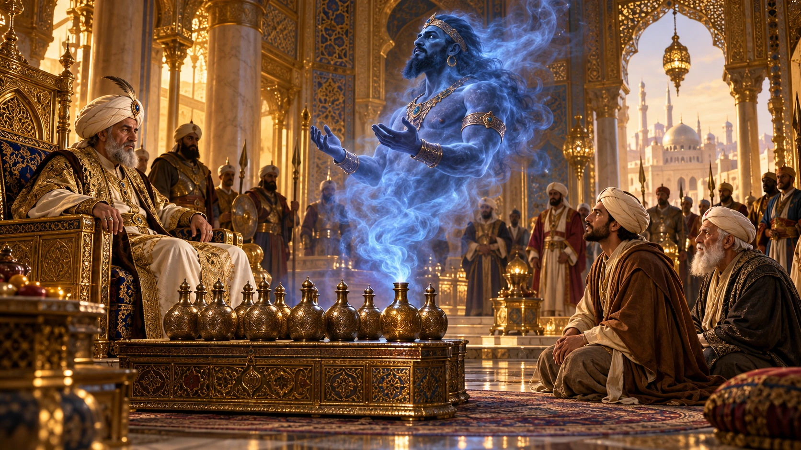
Interpretazione visiva fantasy · immagine AI
A Damasco Musa raccontò al califfo la strada percorsa, le iscrizioni, la città deserta e la morte di Talib. ʿAbd al-Malik desiderò aver visto quelle meraviglie con i propri occhi.
Aprì i vasi. Gli spiriti ne uscirono invocando il perdono del profeta e promettendo di non ripetere la loro ribellione. Il califfo si meravigliò dell’autorità concessa a Salomone e distribuì le ricchezze.
Nella versione di Payne Musa chiese di lasciare il governo al figlio e si ritirò a Gerusalemme per dedicarsi al culto di Dio. Il viaggio era terminato e il viaggiatore aveva cambiato vita.
Erano partiti per riportare oggetti. Tornavano anche con parole capaci di trasformare il desiderio. I tesori della città erano sopravvissuti ai suoi abitanti ma non li avevano nutriti. La memoria poteva ancora parlare a chi avrebbe letto la storia.
Le risposte sono nascoste nel viaggio appena compiuto.
Il viaggio si apre ancora
Hai trovato tutte le chiavi. Il video-premio verrà inserito qui nella versione completa.
Fonti e chiavi di lettura
Il racconto segue Payne: cavaliere orientatore prima di Dahish, sette tavole sull’altura, vasi recuperati dal mare e ritiro finale di Musa. La numerazione delle notti varia fra edizioni.
Il viaggio è una finzione letteraria. Personaggi con nomi storici, geografie leggendarie e racconti religiosi si intrecciano: la novella non è una cronaca della spedizione. I modal distinguono i fatti narrati dalle nostre letture simboliche e dai confronti moderni.
Le immagini già disponibili sono creazioni AI del progetto. La città color rame è una scelta visiva: nella fonte le mura sono nere e le torri metalliche. Le scene di corte sono interpretazioni e non ricostruzioni documentarie.